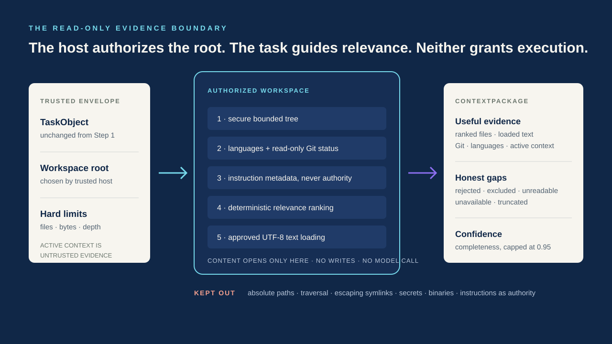

01 · The handoff
A clear request still needs grounded evidence
A request like “fix src/app.py without restarting services” can leave Step 1 with a strong, structured understanding: troubleshoot a named file, preserve a no-restart constraint, and keep the original wording. But understanding the goal does not reveal what is inside the repository, what changed in Git, which file is active, or which project rules exist.
Step 2 fills that gap. It receives the entire TaskObject and preserves it exactly. The task guides which evidence is relevant; it is never rewritten into a plan. The trusted application separately chooses an absolute workspace root. That separation matters: user intent can focus collection, but it cannot expand the boundary the host has authorized.
02 · Responsibility
Context building is collection, not agency
The Context Builder follows a fixed sequence: authorize the workspace, validate active context, list a safe bounded tree, detect languages, collect read-only Git status, discover instruction-file metadata, rank relevant files, load approved text, assemble the package, and calculate context confidence.
- It can observe eligible paths, language signals, the Git branch and changed paths, active editor or terminal evidence, and a bounded amount of selected UTF-8 text.
- It cannot act on terminal output, solve the request, choose a tool, call an LLM, execute a command, edit a file, stage a change, or grant permission.
- It does not promote repository text into trusted instructions. Project instruction files are recorded by path, kind, and scope; their content is deferred.
Evidence can help a future system decide. Evidence cannot authorize that decision.

03 · The boundary
The workspace is a hard edge, not a suggestion
Every internal path must be repository-relative and resolve inside the host-approved root. Absolute paths, parent traversal, missing targets, broken links, and symlinks that escape the workspace are rejected. Safe symlink paths may appear in the tree, but symlinked directories are not followed and final symlinks are never opened for content.
A shared policy keeps dependency trees, caches, builds, logs, compiled files, private keys, environment files, and known binary types out. .env.example can remain visible as a template; actual .env variants do not. The content loader is the only Step 2 component allowed to open files, and it rechecks containment and policy immediately before a race-resistant, no-follow read.
04 · Relevance
Useful context is selected with explainable rules
Loading an entire repository would be expensive, noisy, and unsafe. CloudX first collects metadata, then ranks eligible files from signals already available: named task entities, the active file, Git changes, terminal path references, path relationships, and known project patterns. Equal results have a stable order.
There is no model reranker. Selection is deterministic, inspectable, and reproducible when the request and workspace state are unchanged. Ranking also does not grant read access: the loader independently applies the workspace and file policies again.
validated TaskObject + trusted workspace root
+ optional untrusted active context + trusted limits
↓
authorize → inventory → rank → bounded load
↓
validated ContextPackage05 · Bounded by design
A ContextPackage is intentionally smaller than the workspace
Default budgets allow up to 5,000 tree entries, 20 loaded files, 100,000 bytes per file, and 500,000 loaded bytes in total. Selected text, terminal output, tree depth, Git paths, and Git status output have separate limits. The schema also sets hard maximums so a caller cannot request unbounded collection.
Large valid text may be returned as a safe UTF-8 prefix marked truncated=true. Invalid UTF-8, NUL-containing data, unreadable files, secrets, binaries, unsafe paths, and over-budget candidates are not smuggled into an apparently complete package.
06 · Transparency
Partial evidence must look partial
Every rejection or limit effect can become a structured omission: path rejected, secret or binary excluded, unreadable, file too large, byte or file count reached, tree or active context truncated, Git collection failed, or instruction content deferred. An omission is not automatically a failure. Excluding a secret is healthy behavior, while a normal non-Git folder is represented neutrally.
The important property is honesty. A later consumer can see what was gathered, what was unavailable, and why. It does not have to infer completeness from silence.
07 · Confidence
A score for evidence completeness—not correctness
Context confidence starts from a documented base, adds useful evidence, subtracts bounded penalties for meaningful gaps or truncation, rounds to two decimals, and never exceeds 0.95. Its machine-readable breakdown includes factor codes, impacts, explanations, the uncapped score, and the final score.
The number does not predict whether a future solution will work. It does not certify a request as safe and it never grants permission to act. Expected security exclusions do not create artificial failure penalties, non-Git workspaces remain neutral, and missing evidence is never guessed.
08 · Outcome
Step 2 is complete; the agent loop is not
The completed implementation provides the ContextPackage contract, workspace authorization, active-context validation, secure tree collection, language detection, read-only Git metadata, instruction discovery, deterministic relevance, bounded content loading, pure package assembly, and transparent confidence scoring.
The local suite contains 96 tests. End-to-end cases verify exact TaskObject preservation, deterministic non-Git output, no workspace writes, secret and binary exclusion, symlink-escape rejection, and honest truncation. Component tests exercise the finer security and invariant boundaries.
Current line: user request → structured TaskObject → read-only Context Builder → bounded ContextPackage.
Not current: Step 3, an agent loop, tool execution, planning, file modification, or cloud runtime staging for Step 2.
09 · What comes next
The next stage must inherit the boundary, not erase it
Step 3 has not started. When it is designed, it will need a separate review and must consume the existing ContextPackage without weakening intent preservation, workspace containment, collection budgets, omission transparency, or the distinction between evidence and authority.
That sequencing is the larger CloudX lesson so far: capability should arrive only after the contract around it is explicit. Step 1 made the request inspectable. Step 2 makes the available evidence inspectable. Neither pretends that observation is permission to act.